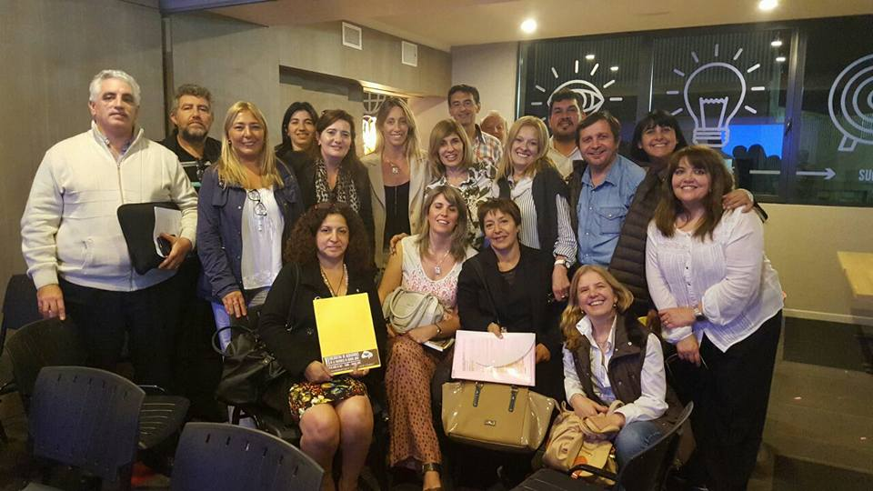
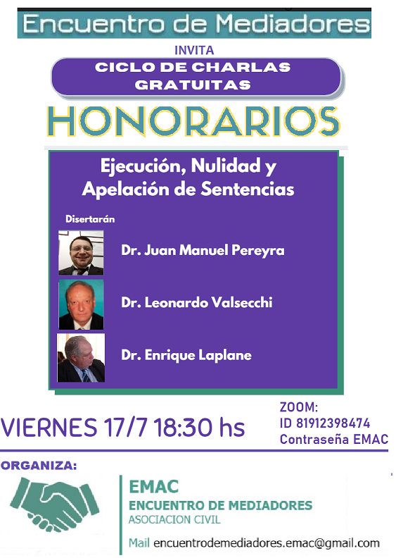

Inicio
Conocenos. Colaborá. Consultá. Contactanos.

Últimas Noticias:
Ciclo de CHARLAS GRATUITAS
Fecha: 2020-07-14 17:20Ejecución, nulidad y apelación de sentencias regulatorias por Zoom - 17/7/20 a las 18.30 hs
Organiza: Encuentro de Mediadores (EMAC)

Informe de Gestiones sobre Retribución del Mediador
Fecha: 2018-09-11 18:20
ENCUENTRO DE MEDIADORES·MARTES, 11 DE SEPTIEMBRE DE 2018
El 25 de abril de 2017 el Comité de Gestión y Seguimiento de Encuentros de la Provincia de Buenos Aires se reunió con Director de Mediación y Composición, el Dr. Sergio C. Dos Santos, ocasión que se le agrego para su tratamiento dentro de esa Dirección el Proyecto de Honorarios consensuado por los mediadores en el VI Encuentro de Mediadores de la Provincia de Buenos Aires que contempla las reales necesidades de cobro de una retribución digna de los abogados-mediadores.
El Dr. Dos Santos formó expediente administrativo para su tratamiento, recibiendo el Nro. 21200-101668/17. En ese mismo Expte. se presentó posteriormente el Proyecto COLPROBA, con una escala que iba entre el 6 y el 10%.
El Colegio de Abogados de Lomas de Zamora, presentó un rechazo a la modificación de la escala propuesta por COLPROBA. El Colegio de Abogados de La Matanza también presentó nota de rechazo al proyecto COLPROBA. El Colegio de Abogados de Necochea planteo su disidencia al Proyecto COLPROBA, pero basado en que debía ajustarse a las normas del art. 730 CCyCN, y que la retribución debía ajustarse al verdadero trabajo efectuado.
En el mes de Octubre pedimos “Vista de Causa”, la cual no tuvo respuesta, vinieron la Jornadas Provinciales y se envió otra solicitud de Vista. No teniendo resultado con la DPMARC, se procedió ha averiguar donde se encontraba el mismo, visto que estaba en la secretaria General del Ministerio, se pidió al Sr. Ministro de Justicia, la correspondiente “Vista de Causa”. En esta oportunidad se nos comunicó que estaba disponible al efecto. Concurrimos a ver el Expediente, y logramos comprobar que habían dividido el mismo, aunque se mezclaban diversos temas y notas.
En el mes de marzo con el dictamen del Área Legal y Técnica del Ministerio, se había dado traslado a COLPROBA de la propuesta elaborada desde la Subsecretaria de Acceso a la Justicia de la Provincia de Buenos Aires conforme al mismo.
Ahora recibimos la noticia que existe el decreto 964/2018 Digitalizado, GDEBA-GPBA, con fecha 30 de Agosto de 2018, y aun no publicado
Siendo que somos los gestores iniciales de este Expediente sobre la Remuneración del Mediador, conforme a derecho se nos debió dar traslado del dictamen y de las presentaciones que realizo cualquier entidad dentro del mismo, por eso entendemos que podría existir nulidades con lo cual el mismo tendría vicios desde antes de su nacimiento.
La reacción inmediata fue el planteo del Rechazo del mismo, pues es un ataque directo a uno de los derechos humanos reconocido en el Art. 25 de la Declaración Universal de los Derechos Humanos y ratificado en el Art. 11 del Pacto Internacional de Derechos Económicos, Sociales y Culturales, el derecho Alimentario.
Nos oponemos pues ese Decreto viola principios de equidad al disminuir desproporcionalmente la retribución del mediador, obsérvese que la Mediación Previa Obligatoria, como fue concebida por la Ley 13951, es una actividad que le pertenece al Poder Ejecutivo, pero donde el Estado no sufre costo alguno, pues al delegar esa función en los Abogados Mediadores, estos cargan los costos del sistema.
En defensa de nuestros derechos comenzamos a circularizar la información logrando una reacción muy positiva de los Abogados- Mediadores, donde a modo de ejemplo en la web vía CHANGE, se obtuvo la adhesión de más de 1200 firmas, también vemos con agrado que distintos Colegios de Abogados de la Provincia de Buenos Aires, se solidarizaran y rechazan ese decreto, también una mención a otras sociedades intermedias que también se han solidarizado. Hoy estamos en el proceso de pedir reuniones con las autoridades, presentando las notas respectivas, tratando de evitar un conflicto no querido por nuestra parte.
Seguimos trabajando por y para los Mediadores y la Mediación en la Provincia de Buenos Aires.
Esas cosas que no te dicen... Nro. 1.
Fecha: 2018-09-11 16:09
- te pedimos que firmes por que:
- Te dijeron que el Dec. 964 modifica la base para el cálculo de tu RETRIBUCIÓN. El Dec. 2530/10 decía “A los fines de determinar la base sobre la que se aplicará la escala precedente, se tendrá en cuenta el monto del reclamo, acuerdo o sentencia, según corresponda, incluyendo capital e intereses”. - El Dec. 964/18 suprimió el “incluyendo capital e intereses” es decir desde su aplicación será solo capital.
- Nadie te dijo esto... por eso estamos nosotros defendiendo tus intereses, hacete escuchar.
Carta de la Asociacion de Abogados de 25 de Mayo respecto al decreto 964/18
Fecha: 2018-09-11 16:06Compartimos con uds. la carta que, en referencia al decreto 964/18 la Asociacion de Abogados de 25 de Mayo le hiciera llegar al Presidente del Colegio de Abogados de Mercedes, Dr. Mateo Laborde. en rechazo al decreto reglamentario, y adhiriendo a nuestra nota de repudio.
Leer mas...
COMO AVANZA NUESTRA CAMPAÑA?
Fecha: 2018-09-11 15:59
El rechazo generado por el decreto que reduce nuestros honorarios hizo que llegáramos a las 1200 firmas en 48 hs!!!
La contundente respuesta de los mediadores a esta iniciativa, ya obligo a varios colegios de abogados a tener que realizar reuniones de urgencia y expresar públicamente su rechazo.
Ayúdennos a seguir compartiendo esta campaña para hacer oir la voz de los mediadores ! https://chn.ge/2LPCdid
Tambien te invitamos a sumarte a Encuentro de Mediadores EMAC, para seguir defendiendo nuestros derechos, cada vez con mas fuerza y organización, . Completá este formulario https://goo.gl/forms/1O6pow6d2TpsiySD3
CUANTO NOS VA A DOLER?
Fecha: 2018-09-11 15:55FIRMA EL PETITORIO EN CHANGE.ORG
Fecha: 2018-09-11 15:51GOBERNADORA DE LA PROVINCIA DE BUENOS AIRES: REPUDIAMOS LA BAJA DE LOS HONORARIOS DE LOS MEDIADORES DE LA PROV. DE BS AS. -
¡Firmá la petición!
Nota de repudio al nuevo Decreto Reglamentario.
Fecha: 2018-09-11 15:44Congreso Mundial de Mediación
Fecha: 2018-07-18 16:18{kind=link}
Accede aca a la informacion sobre el Congreso Mundial de Mediación.
Nuevo fallo en la Sección Jurisprudencia.
Fecha: 2018-06-27 10:36Aplica los 9 ius, por falta de presentación de demanda, revoca los 4 ius fijados en primera instancia, basados en la aplicación de la ley 8904. Lomas de Zamora, Junio de 2018
Fallo Camara de Dolores rechaza inconstitucionalidad del art. 27 del Decr. 2530/10
Fecha: 2018-06-27 08:56{kind=link}
Compartimos con uds. este excelente fallo, que nos hiciera llegar la Dra. Viviana Peñoñori, a quien desde ya agradecemos, donde se rechaza la inconstitucionalidad de nuestros honorarios y se destaca la tarea del mediador, y la diferencia con el abogado de parte.
Nuevos fallos cargados en la Seccion Jurisprudencia
Fecha: 2018-06-16 17:44Fallo sobre extemporaneidad del planteo de inconstitucionalidad de los honorarios del mediador. 12/6/2018 - CACC MP S1 Leer mas